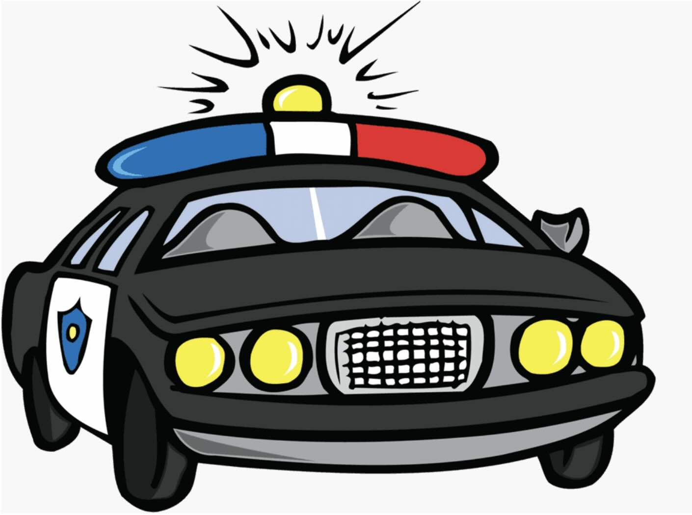

How We Communicate Over Distances
What is Communication?
Communication means sending or receiving a message. People and animals communicate with each other in many different ways. We can communicate over short and long distances using light and sound.
Fun Fact: Did you know? Before telephones were invented, people used to communicate over long distances using smoke signals, drums, or flags!
Communicating with Light
Light helps us see in the dark and can travel very long distances. We use light in many ways to send messages to others.
Examples of Light Communication:
- Emergency Vehicles: Ambulances and fire trucks have flashing lights to tell people there is an emergency and they should move out of the way.
Ambulances use bright flashing lights to let people know they need to move out of the way.
- Traffic Lights: Traffic lights use different colored lights to give messages to drivers:
- Green light means "go"
- Yellow light means "slow down"
- Red light means "stop"
These lights help keep people safe on the road by controlling traffic.
Traffic lights communicate important instructions to drivers using different colored lights.
- Lighthouses and Aircraft Lights: Tall buildings with bright lights that flash to warn ships about dangerous rocks or coastlines at night. Similarly, aircraft use special lights to help navigate safely.
Aircraft use special lights to communicate their position to other aircraft and ground control.
Example: When you're reading in the dark, you might use a flashlight to help you see the words on the page. The light travels from the flashlight to the book and then to your eyes.
Special Light Communication: Fireflies
Some animals use light to communicate too! Fireflies (also called lightning bugs) have special bodies that can create light. They light up to help other fireflies find them. This is called bioluminescence.
Fireflies create their own light to communicate with each other in the dark.
Try This: On a dark night, count how many seconds pass between a firefly's flashes. Different types of fireflies have different flashing patterns!
Communicating with Sound
Sound is made by vibrations. When something vibrates (moves back and forth quickly), it creates sound waves that travel through the air. We hear sounds with our ears. Sound can travel long distances and around corners.
Sound waves travel from a source (like a trumpet) through the air to our ears.
Examples of Sound Communication:
- Emergency Sirens: Police cars, ambulances, and fire trucks have loud sirens that tell people there is an emergency.

Police cars use sirens and flashing lights to communicate emergencies to people.
- Alarms: Fire alarms make loud noises to warn people about danger.
- Music: Different types of music can communicate different feelings. Scary music in movies tells us something frightening might happen.
- Voices: We communicate with each other using our voices to create sounds that form words.
How Animals Use Sound
Animals use different sounds to communicate messages to each other:
- Birds: Birds sing to let other birds know they are there. Different songs can mean different things like "this is my territory" or "I'm looking for a mate."
Birds sing songs to communicate with other birds about territory, finding mates, or warning about danger.
- Bears: Bears can growl to warn other animals to stay away.
- Crickets: Crickets chirp to let other crickets know where they are.
- Whales: Whales make special songs that can travel for miles underwater.
Fun Fact: Some whale sounds can travel hundreds of miles through the ocean!
String Telephones: Sound Waves in Action
A string telephone is a simple communication device you can make at home. It shows how sound waves travel through objects.
Make a String Telephone:
- Get two paper cups
- Poke a small hole in the bottom of each cup
- Thread a long piece of string through the holes
- Tie knots in the string inside each cup
- Have a friend hold one cup while you hold the other
- Walk apart until the string is tight
- Speak into your cup while your friend listens with their cup against their ear
How it works: When you speak into the cup, your voice makes vibrations. These vibrations travel down the string to your friend's cup. The cup makes the vibrations louder so your friend can hear your message!
Morse Code: A Special Language
Morse code is a special code that uses short and long signals to represent letters and numbers. It can be used with both light and sound. Sailors on ships use Morse code with flashing lights to communicate from one ship to another.
A person sending Morse code messages using light signals.
In Morse code:
- A short signal is called a "dot" (●)
- A long signal is called a "dash" (—)
For example, the letter 'S' is three dots (● ● ●) and the letter 'O' is three dashes (— — —). The famous SOS distress signal is ● ● ● — — — ● ● ●.
Example: If a ship captain wants to say "HELLO" using a flashlight with Morse code, they would flash:
H: ● ● ● ●
E: ●
L: ● — ● ●
L: ● — ● ●
O: — — —
How Distance Affects Communication
Distance is how far away something is. Different methods of communication work better over different distances:
- Short Distances: Talking, whispering, hand signals
- Medium Distances: Shouting, whistles, drums, string telephones
- Long Distances: Sirens, large lights (like lighthouses), telephones, radio
Some things that affect how well we can communicate over distances:
- Weather: Fog or rain can make it hard to see light signals
- Noise: Loud environments can make it hard to hear sound signals
- Obstacles: Hills, buildings, or trees can block both light and sound
Let's Review What We Learned
- Communication means sending or receiving a message
- Light allows us to see in the dark and can be used to send messages over distances
- Sound is caused by vibrations and can also be used to communicate
- Traffic lights use different colored lights to tell drivers what to do
- Emergency vehicles use both flashing lights and sirens to communicate emergencies
- Animals use both light and sound to communicate with each other
- Morse code is a special code that uses patterns of short and long signals
- String telephones show how sound waves can travel through objects
Check Your Understanding
Think about it: If you were camping in the woods with a friend who was in another tent, what would be the best way to communicate with them?
Think about it: Why do you think emergency vehicles use both lights AND sounds to communicate?
Think about it: If you were a ship captain at night in foggy weather, would light signals or sound signals work better to communicate with other ships? Why?
Communication Game: Practice different ways of communicating with a friend:
- Try using hand signals to give a message
- Try communicating using only sounds (no words)
- Create your own light signals using a flashlight
- Make a string telephone and test how far apart you can be while still hearing each other